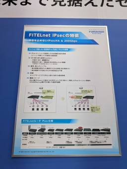

APC 技術ブログ
https://techblog.ap-com.co.jp/
株式会社エーピーコミュニケーションズの技術ブログです。
フィード

【AWS Summit Japan 2026】 AI Agentが経営する店に行ってみた
APC 技術ブログ
こんにちは、クラウド事業部の田島です。 AWS Summit Japan のLiving Mart というブースに行ってきました。 このブースでは6体のAI Agentが自律して店舗を経営する展示がありました。 各エージェントには「Claude」のモデルが使用されており、それぞれ以下のような役割を担っていました。 役職/ロール 担当 業務内容・説明 CEO 経営担当 KPIを見て方針を決め、各エージェントに戦略を投げる。経営判断の中枢 Ops 運営担当 商品企画・発注・在庫・価格設定・売り上げ分析・日々のオペレーション PR 広報担当 ECサイトを自分で編集してデプロイ。販促・導線改善 Con…
11時間前

Splunk Enterprise 9.4 構築手順書：Oracle Linux 9環境（OCI）での導入と夜間停止・容量不足対策
APC 技術ブログ
Splunk Enterprise 9.4をOracle Linux 9で動かす爆速構築手順を解説！OCI（Oracle Cloud）の「Standard3.Flex」を採用し、夜間停止運用と「容量不足（Out of Capacity）」による起動失敗を回避する実戦的なインフラノウハウとお財布に優しい課金停止対策まで網羅。
2日前

【Zscaler】Japan Zscaler User Group 2025 Winter が大盛況！登壇もしてきました
APC 技術ブログ
Japan Zscaler User Group 2025の様子や登壇してきたお話についての記事です。
2日前

【Zscaler】HTTP Header Profile で実現する、きめ細かなURLフィルタリング
APC 技術ブログ
ZscalerのHTTP Header Profileについて解説しています。
3日前

【GitHub】Organization のロールと権限を見直したハナシ
APC 技術ブログ
はじめに こんにちは、ACS事業部の田中（@shuhey1220）です。 管理を担当している Organization でセキュリティ担当者に Security Manager の権限を付与するにあたり、Organization のロールと権限について見直しました。 詳しい仕様は公式ドキュメントに載っていますが、一事例として書き留めておきます。 Security Manager の概要 Security Manager は、Organization レベルで定義できる管理ロールです。 このロールを付与されたユーザーは以下の操作を行えます。 すべてのリポジトリのセキュリティアラート閲覧・管理 O…
4日前

Microsoft Fabric を AI に任せて触ってみた（改訂版）
APC 技術ブログ
こんにちは。ACS事業部の越川です。 謝辞 Fabric を初めて触る方へ プロンプト駆動とはどういうことか Microsoft Fabric とは何か ① Lakehouse: データを集める置き場 ② Shortcut: コピーせずにつなぐ ③ Warehouse: 分析しやすい形に整える ④ Semantic Model: 意味を与える ⑤ Power BI レポート: 見せる AI に任せて触ってみて分かったこと 補足: Fabric を操作するスキルとは何か まとめ 自分の手で試したい方へ（ハンズオン教材） 参考リンク 注記 ACS 事業部のご紹介 先日 Microsoft の Bu…
4日前

ハイブリッドワーク時代で実現する安全な生成AIの利用～in Interop Tokyo 2026～
APC 技術ブログ
１．はじめに ２．Interopと今年のテーマとは ３．「クラウド型セキュリティによる生成AIの安全な利用統制」技術 3.1．ゼロトラスト時代におけるハイブリッドワークの通信ネットワーク 3.2．どこでも快適に、安全に「KDDIが実現するネットワーク構成」 【オフィスからの通信（インターネットブレイクアウトの実現）】 【テレワーク（自宅など）からの通信（強固な暗号化とオフロード）】 3.3．生成AIアプリケーションへの安全なアクセス制御 3.4．利用者にとってのメリット ４．まとめおよび感想 メンターからのひとこと １．はじめに はじめまして。2026年度新卒で入社いたしました組織能力開発部の…
7日前
FabricをAIに任せて、AIコストの正体を測ってみた
APC 技術ブログ
こんにちは。ACS事業部の越川です。 やったこと: GitHub Copilot CLI に Fabric 操作を任せて測る 計測結果: lab別の消費 遅いモデルとの付き合い方 一番の難所で起きたこと 軽量モデルは、難所でツールを使いこなせなかった 見えてきたこと: コストは「使う人」と「使い方」で決まる おまけ: スキルは「呼ばれた時だけ」コストになる まとめ 注記 ACS 事業部のご紹介 GitHub Copilot が2026年6月から従量課金（AI Credits）へ移行しました。社内でも「実際どれくらいクレジットを使うのか」「使用量をどう可視化するか」が話題になっています。気になる…
8日前

【Interop 2026】「IPsec HA」が実現する高速冗長化の仕組み
APC 技術ブログ
■ はじめに 初めまして！2026年度新卒で入社いたしました。組織能力開発部の高江洲です。 今回、ありがたいことに幕張メッセで開催された「Interop Tokyo 2026」に参加させていただきました。数々の最先端技術に触れる中で、特に私が興味を惹かれた トピックについて、 学びと自身の共有も兼ねてブログを書かせていただきます。 ※本記事は、Interop Tokyo 2026のセッションを現地で視聴したエンジニアが、できる限り客観的にその内容や感想を共有することを目的に作成いたしました。 技術に関してもブログに関しても、まだまだ未熟な点が多々ありますが、温かい目でお読みいただけますと幸いで…
8日前

ShowNet「水冷」を新卒が視る！
APC 技術ブログ
はじめに こんにちは、2026年度新卒で入社いたしました組織能力開発部の柴田です。 本記事は、インターネットテクノロジーのイベントである「Interop Tokyo 2026」への参加レポートです。 展示内容の中で特に興味深かった「水冷技術」について、 私個人の視点から感じたことや学んだことを共有させていただきます。 ※本記事の内容は、イベントでの展示や説明に基づいた私個人の考察・感想であり、 所属する組織の公式な見解や推奨を代表するものではありません。(執筆時点2026年6月) 技術面・執筆面ともに未熟な点も多くございますが、温かく見守っていただけると嬉しいです。 はじめに 選定した理由 水…
9日前
「通信は電気」から「すべてを光へ」 【Interop Tokyo 2026参加レポート】
APC 技術ブログ
※本記事では、Interop Tokyo 2026の参加レポートとIOWN構想について注目したポイントを、内容をできる限り客観的に共有することを目的に作成しました。また、生成AIを活用し添削などを行っています。 はじめまして、2026年度新卒で入社いたしました組織能力開発部の林 楓馬（はやし ふうま）です。 先日、幕張メッセで開催された「Interop Tokyo 2026」に参加してきました！ 本記事では、その中で特に興味深かった技術や、私が感じた学びについてご紹介します。 至らない点もあるかと存じますが、皆様のご参考になれば幸いです。 Interop Tokyo 2026の感想 NTTが提…
9日前
ビジネス目線でAI活用を定義するなら
APC 技術ブログ
こんにちは。ACS事業部の越川です。 サービスが選ばれるには「きっかけ」が要る 売る側に必要なのは、生の声を拾う力 継続こそが生命線。ただし離脱には2種類ある クライアントワークに置き換える。次に繋げる一歩とは 私なりの定義 注記 ACS 事業部のご紹介 先日、社内SNSで冷凍宅配弁当のサブスクリプションサービスが話題になっていました。あるメンバーが「これから生活が慌ただしくなるので、時短で食事をきちんととれるものを選んだ」と紹介したのがきっかけです。 最初はただの雑談として眺めていたのですが、やりとりが続くうちに、これはAI活用の本質とまったく同じ構図だと気づきました。本記事は、その気づきか…
9日前
【DAIS2026】参加レポート：サンフランシスコ出張
APC 技術ブログ
はじめに 会場到着からチェックイン DAIS会場について keynoteセッション Day 1（火曜日）｜Lakehouse × AIエージェント Day 2（水曜日）｜AIの民主化と新プロダクト群 印象的だったセッション Comprehensive Data Warehouse Migrations with LakeBridge Building an Explainable AI Research Agent With Databricks Genie Lakewatch — オープンセキュリティレイクハウス セッション以外の楽しみも充実 DAIS終了後のオフ おわりに はじめに iTO…
10日前
【さくらのクラウド】モニタリングスイートでアラート運用を検証してみた
APC 技術ブログ
こんにちは。クラウド事業部の遠見です。 本記事は、さくらのクラウドの「モニタリングスイート」を検証したエンジニアが内容をできる限り客観的に共有することを目的に、生成AIを活用して作成したものです。 前回、モニタリングスイートのログ・メトリクス・トレース・アラート・ダッシュボードの基本機能を検証しました。 techblog.ap-com.co.jp 前回はアラートについて、PromQLしきい値による単純な発火確認までしか行いませんでした。 今回は「発火したアラートをどう実運用に繋げるか」に焦点を当て、通知連携・多段しきい値・ログベースの異常検知まで検証しました。 目次 はじめに アラート通知の全…
10日前
【合格体験記】AWS AIP-C01に合格しました。
APC 技術ブログ
はじめに こんにちは、株式会社エーピーコミュニケーションズ クラウド事業部の田島です。 先日、AWS AIP-C01に合格しましたので、所感を記載していこうと思います。 保有資格 AWS SAA,SOA,DVA,SAP,DOP,SCS,DBS,ANS,DEA,MLS,AIF,MLA,CLF 点数 751点 勉強時間 3週間、20時間程度です。 使用した教材 Amazon Bedrock 生成AIアプリ開発入門 2024年6月出版の本なので、一部情報が古い点はありますが、全体感を把握する上で有用だと思います。 古い情報については、今はどうなっているかを考えたり調べるとより良かったです。 Amaz…
11日前
【Interop2026参加レポート】増していくAIリスクに「可視化」で対抗
APC 技術ブログ
1. はじめに 皆さんはじめまして！2026年度新卒で入社いたしました組織能力開発部の重延 宙（しげのぶ ひろし）です。 私は大学院時代、自然言語処理（NLP）の分野で「Transformerモデルのファインチューニングによる有害情報の自動検出」というテーマで研究をしていました。そのため、AIについては多少の知識はありますが、ネットワークやセキュリティといったインフラ領域に関しては、全く触れておらず勉強中の身です。 そんな私が、先日開催された国内最大級のネットワークイベント「Interop Tokyo 2026」に参加してきました。 本記事では、大学での研究経験と、今回学んだインフラの最新トレ…
11日前
【Interop 2026】新種メール攻撃の82.8%が日本に集中？プルーフポイント社基調講演に学ぶ、 AI時代のサイバー攻撃
APC 技術ブログ
Interop Tokyo 2026で聴講した、自律型AIによる最新のサイバー攻撃とその防衛策についてのレポート記事です。 本記事では、特にメール攻撃のトレンドと、エンジニアとして今後どのようにセキュリティに向き合うべきかについてまとめています。 ※本記事は、Interop Tokyo 2026のセッションを現地で視聴したエンジニアが、内容をできる限り客観的に共有することを目的に作成しました。 こんにちは、2026年度新卒で入社いたしました組織能力開発部の吉田愛です。 本記事の目的はInterop Tokyo 2026に参加した際にわたしが得た発見と感想を共有することです。 初めての技術ブログ…
11日前
【合格体験記】Python3 エンジニア認定実践試験を受験してみた
APC 技術ブログ
目次 目次 はじめに Python3 エンジニア認定実践試験について 試験の申込と試験対策 試験の申込 試験対策 試験の結果と所感 結果 所感 まとめ さいごに はじめに こんにちは。株式会社エーピーコミュニケーションズ クラウド事業部の佐藤です。 Python3 エンジニア認定実践試験を受験し合格したので内容と所感を紹介したいと思います。 Python3 エンジニア認定実践試験について 参考ページ Python試験の一覧 (閲覧日: 2026年6月22日) www.pythonic-exam.com Python3 エンジニア認定実践試験のページ(閲覧日: 2026年6月22日) www.p…
11日前
【Datadog】AWS 全冠エンジニアが Datadog 認定 3 試験に合格しました 〜勉強法と対策まとめ〜
APC 技術ブログ
Datadog Fundamentals、Log Management Fundamentals、APM & Distributed Tracing Fundamentals の3試験に合格しました。公式Learning Path、Practice Exam、受験ブログを活用した勉強法、英語試験対策、実務で役立った学びをまとめます。
11日前
AI時代の期待「宇宙DC」（Interop Tokyo 2026）
APC 技術ブログ
はじめまして。2026年度新卒で入社いたしました組織能力開発部の福西ゆりです。 この度、Interop Tokyo 2026へ参加しましたので、そこで得た学びを皆様と共有したいと思い、技術ブログを作成いたしました。 至らぬ点もあるかと存じますが、皆様のご参考になれば幸いです。 宇宙DCをテーマにした経緯 Interop Tokyo 2026では、基調講演「宇宙と地上を融合する次世代ICTの未来」に参加しました。 本ブログでは、私が基調講演で学んだ内容とエンジニアとしての考え方の変化について述べます。 講演の内容を、私なりに以下のように要約しました。 AIの急速な発展に伴うDCの建設ラッシュ。そ…
14日前
AI時代のセキュリティ運用：AeyeScanによる脆弱性診断の内製化
APC 技術ブログ
初めまして、2026年度新卒で入社いたしました組織能力開発部の長田芽唯です。 先日Interop Tokyo 2026に参加させていただきました。イベントで得た気づきや学びを報告いたします。 技術知識も浅く、初のブログ投稿で拙い文章ではありますが、温かい目で読んでいただくと共に、お気づきのことがございましたらお知らせいただけると幸いです。 はじめに 今回で33回目の開催となった Interop Tokyo ですが、今年のテーマは「AIとインターネットの次章。〜Internet for AI, AI for Internet.〜」でした。実際、会場内でもAIをテーマとした展示や講演が目立ちました…
14日前
本番環境でのオブザーバビリティによるエージェント品質ループの実現
APC 技術ブログ
Alkis Polyzotis氏とArthur Dooner氏（Databricks）が登壇した Closing the Agent Quality Loop Through Observability in Production のセッションでは 、GenAIエージェントを本番で運用する際の品質管理を自動化する実践的なアーキテクチャが示された。多くのプロジェクトでエージェントは実運用まで到達しにくいが、その典型的な要因として評価コストの増大、ラベル付け負担、既製のジャッジと現場評価のズレ、修正フローの欠如などが挙げられた。以下では、Databricksが示した「トレース→自動評価→SMEアラ…
14日前
TD SYNNEXスポンサー | リアルタイムデータからビジネス価値へ：Databricks・IBM・TD SYNNEXによるエコシステムアプローチ
APC 技術ブログ
TD SYNNEXのセッションでは、Denny OBrien氏がAIが急速に普及する中で企業はデータの断片化、マルチクラウドとオンプレミス混在、リアルタイム性の不足、ポイントソリューションの乱立といった課題に直面しており、統合的なエコシステムが求められると述べられた。 ※本記事は、Data + AI Summit のセッションを現地で視聴したエンジニアが、内容をできる限り客観的に共有することを目的に、生成AIを活用して作成したものです。※サイトの更新により、リンクが無効になる可能性があります。 ― エーピーコミュニケーションズ GDAI部 Lakehouse AI時代のデータ運用に関する指摘 …
14日前
目の前のペタバイト：既存のオンプレミスデータへDatabricksを拡張する
APC 技術ブログ
導入 — なぜ"オンプレミスのままクラウド分析"が今必要か Ugur Tigli氏は、セッションでオンプレミスに残すデータ資産を活かしつつDatabricksの分析機能を利用するアプローチを紹介した。多くの組織でデータ主権やコンプライアンス、機密情報の扱いがクラウド移行を制約しており、データを丸ごとクラウドへ移す従来の手法ではコストや運用負荷、データ忠実度の観点で課題が残る。ここでは、DatabricksとMinIOの連携で提案された「データを移動せずに分析を拡張する」アーキテクチャを技術面から整理する。 ※本記事は、Data + AI Summit のセッションを現地で視聴したエンジニアが、…
14日前
Databricksにおけるデータプライバシー
APC 技術ブログ
Databricksによる「Databricksにおけるデータプライバシー」のセッションでは、AIエージェントが機械速度でデータにアクセスする現実を踏まえ、どのようにデータプライバシーを管理すべきかが議論された。AIの進化はデータ利用の可能性を広げる一方で、新たなガバナンス上の課題を生んでおり、以下ではDatabricksが示した考え方と実装の方向性を整理する。 ※本記事は、Data + AI Summit のセッションを現地で視聴したエンジニアが、内容をできる限り客観的に共有することを目的に、生成AIを活用して作成したものです。※サイトの更新により、リンクが無効になる可能性があります。 ― …
14日前
MCPセキュリティ詳解：Databricksがエンタープライズユーザーのツールアクセスを保護する方法
APC 技術ブログ
Databricksのプロダクトマネジメント担当ディレクターSamrat Ray氏とAIプラットフォーム開発者Sunil Seth氏が登壇したセッションでは、AIエージェントがもたらす新たなリスクとそれに対する防御策が示された。エージェントは予測困難で高スループットにデータや資格情報を扱うため、従来以上にデータ漏洩や破壊的操作のリスクが高まる。本セッションでは、多層防御による実践的な対策が提示された。 ※本記事は、Data + AI Summit のセッションを現地で視聴したエンジニアが、内容をできる限り客観的に共有することを目的に、生成AIを活用して作成したものです。※サイトの更新により、リ…
14日前
Genie Codeの最新イノベーション：エージェンティックデータワークの未来
APC 技術ブログ
DatabricksのWeston Hutchins氏によるセッション「Genie Codeの最新イノベーション：エージェンティックデータワークの未来」で紹介された内容を整理する。データエンジニアリング現場では、既存パイプラインの保守が工数を圧迫し、新規開発に割ける時間が限られるという課題が続いている。汎用的なコード生成エージェントはコード生成自体は得意だが、組織固有のデータカタログやメトリクス定義に基づく文脈化には限界があることが指摘され、その点を補う設計が求められている。 ※本記事は、Data + AI Summit のセッションを現地で視聴したエンジニアが、内容をできる限り客観的に共有す…
14日前
Apache Spark™ 4.1の新機能
APC 技術ブログ
Daniel Tenedorio氏とWenchen Fan氏（Databricks）が登壇したWhat's New in Apache Spark™ 4.1?のセッションで紹介されたSpark 4.1は、運用性、SQLの表現力、半構造化データ処理、低遅延ストリーミング、クライアント接続とPySparkのプロダクション品質強化に重点を置いたリリースだ。以下に主要点を整理する。 ※本記事は、Data + AI Summit のセッションを現地で視聴したエンジニアが、内容をできる限り客観的に共有することを目的に、生成AIを活用して作成したものです。※サイトの更新により、リンクが無効になる可能性があり…
14日前
Databricks Genieによる説明可能なAIリサーチエージェントの構築
APC 技術ブログ
Ruo-Ting Sun氏とChad Novek氏（CVS Health）、Rohan Parikh氏（Databricks）が登壇したBuilding an Explainable AI Research Agent With Databricks Genieのセッションは、多くの小売現場で繰り返される「なぜ売上が下がったのか」「なぜ予測が外れたのか」といった問いに対し、従来の対応が抱える摩擦をどう解消したかを共有した。対話型のセルフサービスで現場リーダーが短時間で根拠付きの回答を得られる仕組みを作り、分析時間を大幅に短縮した点が中心だ。 従来ワークフローの摩擦 小売現場では週次で多数の「な…
14日前
Unity Catalogのコネクション・シークレット・関数による安全な外部データアクセス
APC 技術ブログ
Databricksの同名セッション資料をもとに、Jakob Mund氏とVladislav Mantic-Lugo氏が説明したUnity Catalogを使った外部データや外部サービスへのアクセス制御の要点をまとめる。生成AIの活用が進む中で、多様な外部データへの安全なアクセスとガバナンスは多くの組織の重要課題となっている。 ※本記事は、Data + AI Summit のセッションを現地で視聴したエンジニアが、内容をできる限り客観的に共有することを目的に、生成AIを活用して作成したものです。※サイトの更新により、リンクが無効になる可能性があります。 ― エーピーコミュニケーションズ GDA…
14日前